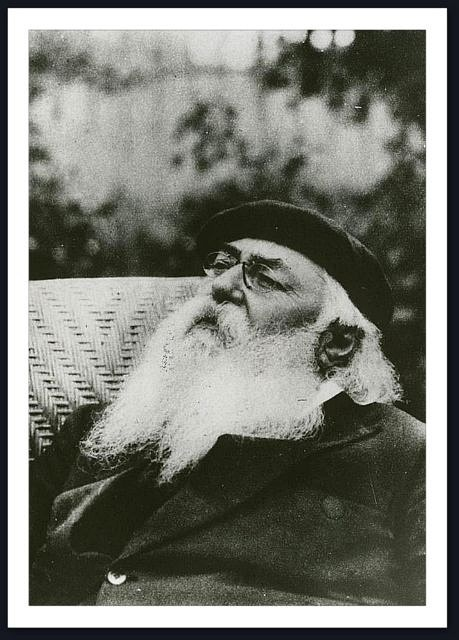

我坐着，读一位诗人
“我上无片瓦，雨水直扑我的眼睛”，是魏育青在《里尔克》（http://book.douban.com/subject/1862454/，123页）里的译法，到了http://book.douban.com/subject/1057434/（330页），改成了“我的头上没有屋顶，滴滴雨水落进我的双眼”。德语原文是“ich habe kein Dach über mir, und es regnet mir in die Augen”，“片瓦”对应“Dach”，应该没有什么可挑剔的，动词“regnen”，直译为“下雨”，后面的介词“in”接了第四格名词，“雨水直扑”，可谓神来之笔。最终魏育青自己抛弃了。Dasha愿意继承。说到继承，想起了北岛，北先生在其于80后、90后的人群中暴得名声的《里尔克：我认出风暴而激动如大海》里引用了魏育青此段译文，却不愿给出出处（好似汪某），然后煞有介事地列出陈敬容、绿原译的里尔克的“那首诗”的译文，然后更加崇洋媚外地以英译本挑汉译本的毛病，天哩，好像英译本与德文原文一定是一样一样的啊：据英译本挑陈敬容的，本来可以，可是，您得以陈敬容所据的英译本来“指瑕”吧，否则，岂不是“瞎指”？不懂德语的Coetzee，也是一丘之貉，以其他英译本说某一英译本有问题，究竟谁有问题？北先生，自称为“诗人”，C先生，踩了狗屎运得了一个什么著名的文学奖，因此，Dasha更愿意看一位并未得过什么文学奖的自称“我的诗没有一首是诗”（Alle meine Verse aber sind anders entstanden, also sind es keine）的诗人所礼赞的另一位同样未获过奖的“幸福的诗人”（Ein glücklicher Dichter）：
Bibliothèque Nationale
我坐着，读一位诗人。大厅里人很多，但你却觉察不到他们。他们存在于书籍中。偶尔，他们在书页间晃动，仿佛睡着的人在两个梦之间翻身。啊，置身于阅读着的人之间，竟是多么美好啊！为什么他们不始终这样？你可以走向一个人，轻轻地碰他一下：他浑然无觉。假如你起身时稍稍撞了一下邻座，你向他道歉，他会向听到你声音的方向点点头将脸转向你却并不看你，他的头发仿佛甜睡者的头发 。这是何等惬意啊！我坐着，拥有一位诗人。这是怎样的一种命运啊。此刻大厅里大约有三百人在阅读，但是不可能他们每人都各自拥有一位诗人（上帝知道 他们拥有的是什么）。三百位诗人是不可能有的。但是你瞧，这是怎样的一种命运啊，我，或许是这些阅读者中最贫穷的，一个外国人，我却拥有一位诗人。虽然我穷，虽然我天天穿在身上的衣服开始现出某些部位 ，虽然我的鞋会让某些人提出反对意见。但我的领子是干净的，我的内衣也是干净的，我这副模样，可以走进任意一家糕点店，并且可能是宽阔的大道上的一家，我可以安心地把手伸进糕点盘 里拿些什么。人们不会因此发现有什么不妥、不会责骂我、将我赶出来，因为这毕竟是一只来自上流社会的手，一只每天要洗上四、五遍的手。是的，指甲里毫无污渍，写字用的手指也没有墨迹，尤其是关节处无可指责。穷人洗手是不会洗到那里的，这是一个尽人皆知的事实 。人们可以因此从关节处的清洁程度推断出某种结论，人们也正是这样推断的。在商店里推断。但是却还有这样一小撮家伙，比如在Boulevard Saint-Michel（圣•米歇尔 大街）或者rue Racine（拉辛 路）上的，他们并不糊涂，他们对我的关节理论发出嘘声。他们盯着我、对我了如指掌。他们知道我原本属于他们一伙，我只不过是在耍一个小小的花招 而已。这真是一个狂欢节。他们并不想扫我的兴，他们只是稍稍露齿讪笑并对我睒眼。没有人看见他们的这些动作。此外，他们还是待我如绅士。如果有什么人在近旁时，他们甚至会对我卑躬屈膝。他们的姿态 ，仿佛我貂皮在身或者身后跟着我的马车。偶尔我给他们两个苏，我颤抖着，害怕他们会拒绝，但是他们接受了。只要他们不再稍稍露齿讪笑并对我睒眼，一切都似乎顺理成章。这些人究竟是谁？他们想从我这里得到什么？他们在等着我吗？他们凭什么认出我的 ？真的，我的胡子看上去有些疏于修剪，只是完全、完全稍微让人想起他们始终给我留下印象的、病态的、苍老的、褪色的胡子。然而我就没有权利疏于修剪我的胡子吗？许多忙碌的男人都这么做，却没有人因此将他们视作弃人。因为我清楚，他们是弃人，不仅仅是乞丐；是的，根本不是乞丐，人们必须加以甄别。他们是垃圾，是被命运呕吐出的人的皮壳。命运唾液的潮湿将他们粘贴在墙上、路灯上、招贴柱上，或者，他们慢慢向下流入小巷，身后拖出一条幽暗、肮脏的痕迹。这个老太太，拿着一个床头柜抽屉，里面滚动着几颗纽扣和针，不知道是从哪个洞里爬出来的，她到底要从我这里得到什么？为何她一直走在我的旁边不停打量我？好像试图用她的烂眼睛认出我，那双烂眼睛，看上去就好似有一个病人把绿色的黏痰吐进了她充血的眼皮。而那个面色苍白的小个子女人为什么要 在我身旁对着橱窗站了足有一刻钟，她向我显示了一枝旧的长铅笔，铅笔无尽缓慢地从她残缺、合在一起的两手中伸出。我佯装在 观察陈列的商品而对她毫无觉察。但是她知道我已经看见她，她知道我站在那里在想她究竟要做什么。事情与那枝铅笔毫无关系 ，这点我清楚知道：我感到，这是一个暗号，发给知情者的一个暗号，弃人们皆知的一个暗号；我预感到她在暗示我必须到某个地方去或者必须做些什么。而最为奇怪的是，我始终没有摆脱这种感觉，我感觉到这个暗号实际上真的有某种约定，而这个情景原本也是某个我所期待的情景。
这是两周前的事了。但是如今几乎没有一天没有这样的遭遇。不仅仅在暮色里，就是中午人潮涌动的街上，也会突然蹦出一个小个子男人或者老女人，向我点点头，显示给我些什么，然后消失得无影无踪，仿佛该做的事都做过了。可能，有那么一天，他们会造访我的斗室，他们一定知道我住在哪里，他们可能早已计划好怎样避开看门人的阻拦。但是在这儿，亲爱的，在这儿面对你们我安全了 。要进入这个大厅，必须有一个特殊的卡片。我比你们多了这张卡片 。就像人们能够想象的那样，我有些胆战心惊地走过大街。但终于，我站在一扇玻璃门之前，推开门，我仿佛回到了家，我在下一道门前出示我的卡片（恰恰就像你们向我显示你们的东西一样，其中的差别仅仅在于，人们理解、领会我的意思——），然后我置身于这些书之间，被带离你们，仿佛已经死去，于是，我坐着，读一位诗人。
你们不知道什么是诗人吧？魏尔伦（Verlaine）……一无所知？毫无印象？是的，在你们认识的人之中，你们辨别不出他吧？我知道，你们是辨别不出诗人的。不过，我正阅读的却是另外一位诗人，一位并不住在巴黎的诗人，完全另外的一个人。他在山中有一座宁静的草庐。他的声音仿佛清风里的钟 。他是一位幸福的诗人，他讲述他的窗，讲述他书橱上的玻璃门若有所思地映照出一个亲爱而寂寞的旷远。这就是我原本渴望成为的诗人；因为他知道许多关于少女们的事，而我原本也知道许多 。他知道生活在百年前的少女；尽管她们已经香销玉殒，又有何妨，他知道她们的一切。这是主要的。他念出她们的名字，她们的名字，轻灵、以旧式带卷的细长字母娟秀地写下 ，她们年长的女友成年的名字，早有一丝宿命、一丝失望与死亡在里面共鸣。或许他桃花心木书桌的一个抽屉里放着她们褪色的信笺和她们日记本的散页，里面记写着生日、夏日郊游、生日。或者，他睡房的背景 中大肚五斗橱的一个抽匣里，可能会保存着她们的春装 ，她们复活节时第一次穿上的白衣，本该属于夏天、她们却等不及而早早穿上的圆点薄纱裙。哦，这是一种怎样幸福的命运啊 ，在一座继承来的房子的寂静的房间里安坐在纯然静止、定居下来的事物之中，倾听窗外轻盈、晴翠的花园里互相探询着的最初的鸟鸣 和远村里的钟声。坐着凝视一抹午后温暖的阳光，知道过往少女的许许多多，做一个诗人。思索着 ，我在某处、在这世上的某处安住下来，安住在无数无人挂怀的、已经关门落锁的农舍里的一间，我也成为一个这样的诗人。我只使用一个房间（靠山墙的明亮的房间）。我在里面生活，伴着我的旧物、全家照和书。拥有一张靠背椅、鲜花、狗和一根走碛路 用的结实的手杖，别无其他。只要一本装订着淡黄的象牙色皮面、用古老的散发着花香的图案作衬页的书供我书写。我写下了许多，因为我有许多思想、有对许多人和事的回忆 。
但是事实却是另外一番模样，上帝也许知道，这是为什么。我的旧家具在一个我被允许放置它们的仓库里腐烂，而我本人，啊，上帝啊，我上无片瓦，雨水直扑我的眼睛。
原文：
Bibliothèque Nationale.
Ich sitze und lese einen Dichter. Es sind viele Leute im Saal, aber man spürt sie nicht. Sie sind in den Büchern. Manchmal bewegen sie sich in den Blättern, wie Menschen, die schlafen und sich umwenden zwischen zwei Träumen. Ach, wie gut ist es doch, unter lesenden Menschen zu sein. Warum sind sie nicht immer so? Du kannst hingehen zu einem und ihn leise anrühren: er fühlt nichts. Und stößt du einen Nachbar beim Aufstehen ein wenig an und entschuldigst dich, so nickt er nach der Seite, auf der er deine Stimme hört, sein Gesicht wendet sich dir zu und sieht dich nicht, und sein Haar ist wie das Haar eines Schlafenden. Wie wohl das tut. Und ich sitze und habe einen Dichter. Was für ein Schicksal. Es sind jetzt vielleicht dreihundert Leute im Saale, die lesen; aber es ist unmöglich, daß sie jeder einzelne einen Dichter haben. (Weiß Gott, was sie haben.) Dreihundert Dichter giebt es nicht. Aber sieh nur, was für ein Schicksal, ich, vielleicht der armsäligste von diesen Lesenden, ein Ausländer: ich habe einen Dichter. Obwohl ich arm bin. Obwohl mein Anzug, den ich täglich trage, anfängt, gewisse Stellen zu bekommen, obwohl gegen meine Schuhe sich das und jenes einwenden ließe. Zwar mein Kragen ist rein, meine Wäsche auch, und ich könnte, wie ich bin, in eine beliebige Konditorei gehen, womöglich auf den großen Boulevards, und könnte mit meiner Hand getrost in einen Kuchenteller greifen und etwas nehmen. Man würde nichts Auffälliges darin finden und mich nicht schelten und hinausweisen, denn es ist immerhin eine Hand aus den guten Kreisen, eine Hand, die vier- bis fünfmal täglich gewaschen wird. Ja, es ist nichts hinter den Nägeln, der Schreibfinger ist ohne Tinte, und besonders die Gelenke sind tadellos. Bis dorthin waschen arme Leute sich nicht, das ist eine bekannte Tatsache. Man kann also aus ihrer Reinlichkeit gewisse Schlüsse ziehen. Man zieht sie auch. In den Geschäften zieht man sie. Aber es giebt doch ein paar Existenzen, auf dem Boulevard Saint-Michel zum Beispiel und in der rue Racine, die lassen sich nicht irremachen, die pfeifen auf die Gelenke. Die sehen mich an und wissen es. Die wissen, daß ich eigentlich zu ihnen gehöre, daß ich nur ein bißchen Komödie spiele. Es ist ja Fasching. Und sie wollen mir den Spaß nicht verderben; sie grinsen nur so ein bißchen und zwinkern mit den Augen. Kein Mensch hats gesehen. Im übrigen behandeln sie mich wie einen Herrn. Es muß nur jemand in der Nähe sein, dann tun sie sogar untertänig. Tun, als ob ich einen Pelz anhätte und mein Wagen hinter mir herführe. Manchmal gebe ich ihnen zwei Sous und zittere, sie könnten sie abweisen; aber sie nehmen sie an. Und es wäre alles in Ordnung, wenn sie nicht wieder ein wenig gegrinst und gezwinkert hätten. Wer sind diese Leute? Was wollen sie von mir? Warten sie auf mich? Woran erkennen sie mich? Es ist wahr, mein Bart sieht etwas vernachlässigt aus, ein ganz, ganz klein wenig erinnert er an ihre kranken, alten, verblichenen Bärte, die mir immer Eindruck gemacht haben. Aber habe ich nicht das Recht, meinen Bart zu vernachlässigen? Viele beschäftigte Menschen tun das, und es fällt doch niemandem ein, sie deshalb gleich zu den Fortgeworfenen zu zählen. Denn das ist mir klar, daß das die Fortgeworfenen sind, nicht nur Bettler; nein, es sind eigentlich keine Bettler, man muß Unterschiede machen. Es sind Abfälle, Schalen von Menschen, die das Schicksal ausgespieen hat. Feucht vom Speichel des Schicksals kleben sie an einer Mauer, an einer Laterne, an einer Plakatsäule, oder sie rinnen langsam die Gasse herunter mit einer dunklen, schmutzigen Spur hinter sich her. Was in aller Welt wollte diese Alte von mir, die, mit einer Nachttischschublade, in der einige Knöpfe und Nadeln herumrollten, aus irgendeinem Loch herausgekrochen war? Weshalb ging sie immer neben mir und beobachtete mich? Als ob sie versuchte, mich zu erkennen mit ihren Triefaugen, die aussahen, als hätte ihr ein Kranker grünen Schleim in die blutigen Lider gespuckt. Und wie kam damals jene graue, kleine Frau dazu, eine Viertelstunde lang vor einem Schaufenster an meiner Seite zu stehen, während sie mir einen alten, langen Bleistift zeigte, der unendlich langsam aus ihren schlechten, geschlossenen Händen sich herausschob. Ich tat, als betrachtete ich die ausgelegten Sachen und merkte nichts. Sie aber wußte, daß ich sie gesehen hatte, sie wußte, daß ich stand und nachdachte, was sie eigentlich täte. Denn daß es sich nicht um den Bleistift handeln konnte, begriff ich wohl: ich fühlte, daß das ein Zeichen war, ein Zeichen für Eingeweihte, ein Zeichen, das die Fortgeworfenen kennen; ich ahnte, sie bedeutete mir, ich müßte irgendwohin kommen oder etwas tun. Und das Seltsamste war, daß ich immerfort das Gefühl nicht los wurde, es bestünde tatsächlich eine gewisse Verabredung, zu der dieses Zeichen gehörte, und diese Szene wäre im Grunde etwas, was ich hätte erwarten müssen.
Das war vor zwei Wochen. Aber nun vergeht fast kein Tag ohne eine solche Begegnung. Nicht nur in der Dämmerung, am Mittag in den dichtesten Straßen geschieht es, daß plötzlich ein kleiner Mann oder eine alte Frau da ist, nickt, mir etwas zeigt und wieder verschwindet, als wäre nun alles Nötige getan. Es ist möglich, daß es ihnen eines Tages einfällt, bis in meine Stube zu kommen, sie wissen bestimmt, wo ich wohne, und sie werden es schon einrichten, daß der Concierge sie nicht aufhält. Aber hier, meine Lieben, hier bin ich sicher vor euch. Man muß eine besondere Karte haben, um in diesen Saal eintreten zu können. Diese Karte habe ich vor euch voraus. Ich gehe ein wenig scheu, wie man sich denken kann, durch die Straßen, aber schließlich stehe ich vor einer Glastür, öffne sie, als ob ich zuhause wäre, weise an der nächsten Tür meine Karte vor (ganz genau wie ihr mir eure Dinge zeigt, nur mit dem Unterschiede, daß man mich versteht und begreift, was ich meine —), und dann bin ich zwischen diesen Büchern, bin euch weggenommen, als ob ich gestorben wäre, und sitze und lese einen Dichter.
Ihr wißt nicht, was das ist, ein Dichter? — Verlaine . . . Nichts? Keine Erinnerung? Nein. Ihr habt ihn nicht unterschieden unter denen, die ihr kanntet? Unterschiede macht ihr keine, ich weiß. Aber es ist ein anderer Dichter, den ich lese, einer, der nicht in Paris wohnt, ein ganz anderer. Einer, der ein stilles Haus hat im Gebirge. Der klingt wie eine Glocke in reiner Luft. Ein glücklicher Dichter, der von seinem Fenster erzählt und von den Glastüren seines Bücherschrankes, die eine liebe, einsame Weite nachdenklich spiegeln. Gerade der Dichter ist es, der ich hätte werden wollen; denn er weiß von den Mädchen so viel, und ich hätte auch viel von ihnen gewußt. Er weiß von Mädchen, die vor hundert Jahren gelebt haben; es tut nichts mehr, daß sie tot sind, denn er weiß alles. Und das ist die Hauptsache. Er spricht ihre Namen aus, diese leisen, schlankgeschriebenen Namen mit den altmodischen Schleifen in den langen Buchstaben und die erwachsenen Namen ihrer älteren Freundinnen, in denen schon ein klein wenig Schicksal mitklingt, ein klein wenig Enttäuschung und Tod. Vielleicht liegen in einem Fach seines Mahagonischreibtisches ihre verblichenen Briefe und die gelösten Blätter ihrer Tagebücher, in denen Geburtstage stehen, Sommerpartien, Geburtstage. Oder es kann sein, daß es in der bauchigen Kommode im Hintergrunde seines Schlafzimmers eine Schublade giebt, in der ihre Frühjahrskleider aufgehoben sind; weiße Kleider, die um Ostern zum erstenmal angezogen wurden, Kleider aus getupftem Tüll, die eigentlich in den Sommer gehören, den man nicht erwarten konnte. O was für ein glückliches Schicksal, in der stillen Stube eines ererbten Hauses zu sitzen unter lauter ruhigen, seßhaften Dingen und draußen im leichten, lichtgrünen Garten die ersten Meisen zu hören, die sich versuchen, und in der Ferne die Dorfuhr. Zu sitzen und auf einen warmen Streifen Nachmittagssonne zu sehen und vieles von vergangenen Mädchen zu wissen und ein Dichter zu sein. Und zu denken, daß ich auch so ein Dichter geworden wäre, wenn ich irgendwo hätte wohnen dürfen, irgendwo auf der Welt, in einem von den vielen verschlossenen Landhäusern, um die sich niemand bekümmert. Ich hätte ein einziges Zimmer gebraucht (das lichte Zimmer im Giebel). Da hätte ich drinnen gelebt mit meinen alten Dingen, den Familienbildern, den Büchern. Und einen Lehnstuhl hätte ich gehabt und Blumen und Hunde und einen starken Stock für die steinigen Wege. Und nichts sonst. Nur ein Buch in gelbliches, elfenbeinfarbiges Leder gebunden mit einem alten blumigen Muster als Vorsatz: dahinein hätte ich geschrieben. Ich hätte viel geschrieben, denn ich hätte viele Gedanken gehabt und Erinnerungen von Vielen.
Aber es ist anders gekommen, Gott wird wissen, warum. Meine alten Möbel faulen in einer Scheune, in die ich sie habe stellen dürfen, und ich selbst, ja, mein Gott, ich habe kein Dach über mir, und es regnet mir in die Augen.
延伸阅读：
http://book.douban.com/subject/2284811/
http://book.douban.com/subject/2284810/
鸣谢“一句之师”：Adieudusk
|  |
Francis Jammes |
Bibliothèque Nationale
我坐着，读一位诗人。大厅里人很多，但你却觉察不到他们。他们存在于书籍中。偶尔，他们在书页间晃动，仿佛睡着的人在两个梦之间翻身。啊，置身于阅读着的人之间，竟是多么美好啊！为什么他们不始终这样？你可以走向一个人，轻轻地碰他一下：他浑然无觉。假如你起身时稍稍撞了一下邻座，你向他道歉，他会向听到你声音的方向点点头将脸转向你却并不看你，他的头发仿佛甜睡者的头发 。这是何等惬意啊！我坐着，拥有一位诗人。这是怎样的一种命运啊。此刻大厅里大约有三百人在阅读，但是不可能他们每人都各自拥有一位诗人（上帝知道 他们拥有的是什么）。三百位诗人是不可能有的。但是你瞧，这是怎样的一种命运啊，我，或许是这些阅读者中最贫穷的，一个外国人，我却拥有一位诗人。虽然我穷，虽然我天天穿在身上的衣服开始现出某些部位 ，虽然我的鞋会让某些人提出反对意见。但我的领子是干净的，我的内衣也是干净的，我这副模样，可以走进任意一家糕点店，并且可能是宽阔的大道上的一家，我可以安心地把手伸进糕点盘 里拿些什么。人们不会因此发现有什么不妥、不会责骂我、将我赶出来，因为这毕竟是一只来自上流社会的手，一只每天要洗上四、五遍的手。是的，指甲里毫无污渍，写字用的手指也没有墨迹，尤其是关节处无可指责。穷人洗手是不会洗到那里的，这是一个尽人皆知的事实 。人们可以因此从关节处的清洁程度推断出某种结论，人们也正是这样推断的。在商店里推断。但是却还有这样一小撮家伙，比如在Boulevard Saint-Michel（圣•米歇尔 大街）或者rue Racine（拉辛 路）上的，他们并不糊涂，他们对我的关节理论发出嘘声。他们盯着我、对我了如指掌。他们知道我原本属于他们一伙，我只不过是在耍一个小小的花招 而已。这真是一个狂欢节。他们并不想扫我的兴，他们只是稍稍露齿讪笑并对我睒眼。没有人看见他们的这些动作。此外，他们还是待我如绅士。如果有什么人在近旁时，他们甚至会对我卑躬屈膝。他们的姿态 ，仿佛我貂皮在身或者身后跟着我的马车。偶尔我给他们两个苏，我颤抖着，害怕他们会拒绝，但是他们接受了。只要他们不再稍稍露齿讪笑并对我睒眼，一切都似乎顺理成章。这些人究竟是谁？他们想从我这里得到什么？他们在等着我吗？他们凭什么认出我的 ？真的，我的胡子看上去有些疏于修剪，只是完全、完全稍微让人想起他们始终给我留下印象的、病态的、苍老的、褪色的胡子。然而我就没有权利疏于修剪我的胡子吗？许多忙碌的男人都这么做，却没有人因此将他们视作弃人。因为我清楚，他们是弃人，不仅仅是乞丐；是的，根本不是乞丐，人们必须加以甄别。他们是垃圾，是被命运呕吐出的人的皮壳。命运唾液的潮湿将他们粘贴在墙上、路灯上、招贴柱上，或者，他们慢慢向下流入小巷，身后拖出一条幽暗、肮脏的痕迹。这个老太太，拿着一个床头柜抽屉，里面滚动着几颗纽扣和针，不知道是从哪个洞里爬出来的，她到底要从我这里得到什么？为何她一直走在我的旁边不停打量我？好像试图用她的烂眼睛认出我，那双烂眼睛，看上去就好似有一个病人把绿色的黏痰吐进了她充血的眼皮。而那个面色苍白的小个子女人为什么要 在我身旁对着橱窗站了足有一刻钟，她向我显示了一枝旧的长铅笔，铅笔无尽缓慢地从她残缺、合在一起的两手中伸出。我佯装在 观察陈列的商品而对她毫无觉察。但是她知道我已经看见她，她知道我站在那里在想她究竟要做什么。事情与那枝铅笔毫无关系 ，这点我清楚知道：我感到，这是一个暗号，发给知情者的一个暗号，弃人们皆知的一个暗号；我预感到她在暗示我必须到某个地方去或者必须做些什么。而最为奇怪的是，我始终没有摆脱这种感觉，我感觉到这个暗号实际上真的有某种约定，而这个情景原本也是某个我所期待的情景。
这是两周前的事了。但是如今几乎没有一天没有这样的遭遇。不仅仅在暮色里，就是中午人潮涌动的街上，也会突然蹦出一个小个子男人或者老女人，向我点点头，显示给我些什么，然后消失得无影无踪，仿佛该做的事都做过了。可能，有那么一天，他们会造访我的斗室，他们一定知道我住在哪里，他们可能早已计划好怎样避开看门人的阻拦。但是在这儿，亲爱的，在这儿面对你们我安全了 。要进入这个大厅，必须有一个特殊的卡片。我比你们多了这张卡片 。就像人们能够想象的那样，我有些胆战心惊地走过大街。但终于，我站在一扇玻璃门之前，推开门，我仿佛回到了家，我在下一道门前出示我的卡片（恰恰就像你们向我显示你们的东西一样，其中的差别仅仅在于，人们理解、领会我的意思——），然后我置身于这些书之间，被带离你们，仿佛已经死去，于是，我坐着，读一位诗人。
你们不知道什么是诗人吧？魏尔伦（Verlaine）……一无所知？毫无印象？是的，在你们认识的人之中，你们辨别不出他吧？我知道，你们是辨别不出诗人的。不过，我正阅读的却是另外一位诗人，一位并不住在巴黎的诗人，完全另外的一个人。他在山中有一座宁静的草庐。他的声音仿佛清风里的钟 。他是一位幸福的诗人，他讲述他的窗，讲述他书橱上的玻璃门若有所思地映照出一个亲爱而寂寞的旷远。这就是我原本渴望成为的诗人；因为他知道许多关于少女们的事，而我原本也知道许多 。他知道生活在百年前的少女；尽管她们已经香销玉殒，又有何妨，他知道她们的一切。这是主要的。他念出她们的名字，她们的名字，轻灵、以旧式带卷的细长字母娟秀地写下 ，她们年长的女友成年的名字，早有一丝宿命、一丝失望与死亡在里面共鸣。或许他桃花心木书桌的一个抽屉里放着她们褪色的信笺和她们日记本的散页，里面记写着生日、夏日郊游、生日。或者，他睡房的背景 中大肚五斗橱的一个抽匣里，可能会保存着她们的春装 ，她们复活节时第一次穿上的白衣，本该属于夏天、她们却等不及而早早穿上的圆点薄纱裙。哦，这是一种怎样幸福的命运啊 ，在一座继承来的房子的寂静的房间里安坐在纯然静止、定居下来的事物之中，倾听窗外轻盈、晴翠的花园里互相探询着的最初的鸟鸣 和远村里的钟声。坐着凝视一抹午后温暖的阳光，知道过往少女的许许多多，做一个诗人。思索着 ，我在某处、在这世上的某处安住下来，安住在无数无人挂怀的、已经关门落锁的农舍里的一间，我也成为一个这样的诗人。我只使用一个房间（靠山墙的明亮的房间）。我在里面生活，伴着我的旧物、全家照和书。拥有一张靠背椅、鲜花、狗和一根走碛路 用的结实的手杖，别无其他。只要一本装订着淡黄的象牙色皮面、用古老的散发着花香的图案作衬页的书供我书写。我写下了许多，因为我有许多思想、有对许多人和事的回忆 。
但是事实却是另外一番模样，上帝也许知道，这是为什么。我的旧家具在一个我被允许放置它们的仓库里腐烂，而我本人，啊，上帝啊，我上无片瓦，雨水直扑我的眼睛。
原文：
Bibliothèque Nationale.
Ich sitze und lese einen Dichter. Es sind viele Leute im Saal, aber man spürt sie nicht. Sie sind in den Büchern. Manchmal bewegen sie sich in den Blättern, wie Menschen, die schlafen und sich umwenden zwischen zwei Träumen. Ach, wie gut ist es doch, unter lesenden Menschen zu sein. Warum sind sie nicht immer so? Du kannst hingehen zu einem und ihn leise anrühren: er fühlt nichts. Und stößt du einen Nachbar beim Aufstehen ein wenig an und entschuldigst dich, so nickt er nach der Seite, auf der er deine Stimme hört, sein Gesicht wendet sich dir zu und sieht dich nicht, und sein Haar ist wie das Haar eines Schlafenden. Wie wohl das tut. Und ich sitze und habe einen Dichter. Was für ein Schicksal. Es sind jetzt vielleicht dreihundert Leute im Saale, die lesen; aber es ist unmöglich, daß sie jeder einzelne einen Dichter haben. (Weiß Gott, was sie haben.) Dreihundert Dichter giebt es nicht. Aber sieh nur, was für ein Schicksal, ich, vielleicht der armsäligste von diesen Lesenden, ein Ausländer: ich habe einen Dichter. Obwohl ich arm bin. Obwohl mein Anzug, den ich täglich trage, anfängt, gewisse Stellen zu bekommen, obwohl gegen meine Schuhe sich das und jenes einwenden ließe. Zwar mein Kragen ist rein, meine Wäsche auch, und ich könnte, wie ich bin, in eine beliebige Konditorei gehen, womöglich auf den großen Boulevards, und könnte mit meiner Hand getrost in einen Kuchenteller greifen und etwas nehmen. Man würde nichts Auffälliges darin finden und mich nicht schelten und hinausweisen, denn es ist immerhin eine Hand aus den guten Kreisen, eine Hand, die vier- bis fünfmal täglich gewaschen wird. Ja, es ist nichts hinter den Nägeln, der Schreibfinger ist ohne Tinte, und besonders die Gelenke sind tadellos. Bis dorthin waschen arme Leute sich nicht, das ist eine bekannte Tatsache. Man kann also aus ihrer Reinlichkeit gewisse Schlüsse ziehen. Man zieht sie auch. In den Geschäften zieht man sie. Aber es giebt doch ein paar Existenzen, auf dem Boulevard Saint-Michel zum Beispiel und in der rue Racine, die lassen sich nicht irremachen, die pfeifen auf die Gelenke. Die sehen mich an und wissen es. Die wissen, daß ich eigentlich zu ihnen gehöre, daß ich nur ein bißchen Komödie spiele. Es ist ja Fasching. Und sie wollen mir den Spaß nicht verderben; sie grinsen nur so ein bißchen und zwinkern mit den Augen. Kein Mensch hats gesehen. Im übrigen behandeln sie mich wie einen Herrn. Es muß nur jemand in der Nähe sein, dann tun sie sogar untertänig. Tun, als ob ich einen Pelz anhätte und mein Wagen hinter mir herführe. Manchmal gebe ich ihnen zwei Sous und zittere, sie könnten sie abweisen; aber sie nehmen sie an. Und es wäre alles in Ordnung, wenn sie nicht wieder ein wenig gegrinst und gezwinkert hätten. Wer sind diese Leute? Was wollen sie von mir? Warten sie auf mich? Woran erkennen sie mich? Es ist wahr, mein Bart sieht etwas vernachlässigt aus, ein ganz, ganz klein wenig erinnert er an ihre kranken, alten, verblichenen Bärte, die mir immer Eindruck gemacht haben. Aber habe ich nicht das Recht, meinen Bart zu vernachlässigen? Viele beschäftigte Menschen tun das, und es fällt doch niemandem ein, sie deshalb gleich zu den Fortgeworfenen zu zählen. Denn das ist mir klar, daß das die Fortgeworfenen sind, nicht nur Bettler; nein, es sind eigentlich keine Bettler, man muß Unterschiede machen. Es sind Abfälle, Schalen von Menschen, die das Schicksal ausgespieen hat. Feucht vom Speichel des Schicksals kleben sie an einer Mauer, an einer Laterne, an einer Plakatsäule, oder sie rinnen langsam die Gasse herunter mit einer dunklen, schmutzigen Spur hinter sich her. Was in aller Welt wollte diese Alte von mir, die, mit einer Nachttischschublade, in der einige Knöpfe und Nadeln herumrollten, aus irgendeinem Loch herausgekrochen war? Weshalb ging sie immer neben mir und beobachtete mich? Als ob sie versuchte, mich zu erkennen mit ihren Triefaugen, die aussahen, als hätte ihr ein Kranker grünen Schleim in die blutigen Lider gespuckt. Und wie kam damals jene graue, kleine Frau dazu, eine Viertelstunde lang vor einem Schaufenster an meiner Seite zu stehen, während sie mir einen alten, langen Bleistift zeigte, der unendlich langsam aus ihren schlechten, geschlossenen Händen sich herausschob. Ich tat, als betrachtete ich die ausgelegten Sachen und merkte nichts. Sie aber wußte, daß ich sie gesehen hatte, sie wußte, daß ich stand und nachdachte, was sie eigentlich täte. Denn daß es sich nicht um den Bleistift handeln konnte, begriff ich wohl: ich fühlte, daß das ein Zeichen war, ein Zeichen für Eingeweihte, ein Zeichen, das die Fortgeworfenen kennen; ich ahnte, sie bedeutete mir, ich müßte irgendwohin kommen oder etwas tun. Und das Seltsamste war, daß ich immerfort das Gefühl nicht los wurde, es bestünde tatsächlich eine gewisse Verabredung, zu der dieses Zeichen gehörte, und diese Szene wäre im Grunde etwas, was ich hätte erwarten müssen.
Das war vor zwei Wochen. Aber nun vergeht fast kein Tag ohne eine solche Begegnung. Nicht nur in der Dämmerung, am Mittag in den dichtesten Straßen geschieht es, daß plötzlich ein kleiner Mann oder eine alte Frau da ist, nickt, mir etwas zeigt und wieder verschwindet, als wäre nun alles Nötige getan. Es ist möglich, daß es ihnen eines Tages einfällt, bis in meine Stube zu kommen, sie wissen bestimmt, wo ich wohne, und sie werden es schon einrichten, daß der Concierge sie nicht aufhält. Aber hier, meine Lieben, hier bin ich sicher vor euch. Man muß eine besondere Karte haben, um in diesen Saal eintreten zu können. Diese Karte habe ich vor euch voraus. Ich gehe ein wenig scheu, wie man sich denken kann, durch die Straßen, aber schließlich stehe ich vor einer Glastür, öffne sie, als ob ich zuhause wäre, weise an der nächsten Tür meine Karte vor (ganz genau wie ihr mir eure Dinge zeigt, nur mit dem Unterschiede, daß man mich versteht und begreift, was ich meine —), und dann bin ich zwischen diesen Büchern, bin euch weggenommen, als ob ich gestorben wäre, und sitze und lese einen Dichter.
Ihr wißt nicht, was das ist, ein Dichter? — Verlaine . . . Nichts? Keine Erinnerung? Nein. Ihr habt ihn nicht unterschieden unter denen, die ihr kanntet? Unterschiede macht ihr keine, ich weiß. Aber es ist ein anderer Dichter, den ich lese, einer, der nicht in Paris wohnt, ein ganz anderer. Einer, der ein stilles Haus hat im Gebirge. Der klingt wie eine Glocke in reiner Luft. Ein glücklicher Dichter, der von seinem Fenster erzählt und von den Glastüren seines Bücherschrankes, die eine liebe, einsame Weite nachdenklich spiegeln. Gerade der Dichter ist es, der ich hätte werden wollen; denn er weiß von den Mädchen so viel, und ich hätte auch viel von ihnen gewußt. Er weiß von Mädchen, die vor hundert Jahren gelebt haben; es tut nichts mehr, daß sie tot sind, denn er weiß alles. Und das ist die Hauptsache. Er spricht ihre Namen aus, diese leisen, schlankgeschriebenen Namen mit den altmodischen Schleifen in den langen Buchstaben und die erwachsenen Namen ihrer älteren Freundinnen, in denen schon ein klein wenig Schicksal mitklingt, ein klein wenig Enttäuschung und Tod. Vielleicht liegen in einem Fach seines Mahagonischreibtisches ihre verblichenen Briefe und die gelösten Blätter ihrer Tagebücher, in denen Geburtstage stehen, Sommerpartien, Geburtstage. Oder es kann sein, daß es in der bauchigen Kommode im Hintergrunde seines Schlafzimmers eine Schublade giebt, in der ihre Frühjahrskleider aufgehoben sind; weiße Kleider, die um Ostern zum erstenmal angezogen wurden, Kleider aus getupftem Tüll, die eigentlich in den Sommer gehören, den man nicht erwarten konnte. O was für ein glückliches Schicksal, in der stillen Stube eines ererbten Hauses zu sitzen unter lauter ruhigen, seßhaften Dingen und draußen im leichten, lichtgrünen Garten die ersten Meisen zu hören, die sich versuchen, und in der Ferne die Dorfuhr. Zu sitzen und auf einen warmen Streifen Nachmittagssonne zu sehen und vieles von vergangenen Mädchen zu wissen und ein Dichter zu sein. Und zu denken, daß ich auch so ein Dichter geworden wäre, wenn ich irgendwo hätte wohnen dürfen, irgendwo auf der Welt, in einem von den vielen verschlossenen Landhäusern, um die sich niemand bekümmert. Ich hätte ein einziges Zimmer gebraucht (das lichte Zimmer im Giebel). Da hätte ich drinnen gelebt mit meinen alten Dingen, den Familienbildern, den Büchern. Und einen Lehnstuhl hätte ich gehabt und Blumen und Hunde und einen starken Stock für die steinigen Wege. Und nichts sonst. Nur ein Buch in gelbliches, elfenbeinfarbiges Leder gebunden mit einem alten blumigen Muster als Vorsatz: dahinein hätte ich geschrieben. Ich hätte viel geschrieben, denn ich hätte viele Gedanken gehabt und Erinnerungen von Vielen.
Aber es ist anders gekommen, Gott wird wissen, warum. Meine alten Möbel faulen in einer Scheune, in die ich sie habe stellen dürfen, und ich selbst, ja, mein Gott, ich habe kein Dach über mir, und es regnet mir in die Augen.
延伸阅读：
http://book.douban.com/subject/2284811/
http://book.douban.com/subject/2284810/
鸣谢“一句之师”：Adieudusk
![转发 111](https://www.douban.com/share/recommend?sanity_key=_0b507&apikey=&object_kind=1015&name=%E6%88%91%E5%9D%90%E7%9D%80%EF%BC%8C%E8%AF%BB%E4%B8%80%E4%BD%8D%E8%AF%97%E4%BA%BA&image=https%3A%2F%2Fimg9.doubanio.com%2Fview%2Fnote%2Fsmall%2Fpublic%2Fp184902350-1.jpg&target_action=0&redir=https%3A%2F%2Fwww.douban.com%2Fnote%2F184902350%2F&object_id=184902350&heading=%E8%BD%AC%E5%8F%91%E5%88%B0%E8%B1%86%E7%93%A3&target_type=rec&btn_text=%E8%BD%AC%E5%8F%91&href=https%3A%2F%2Fwww.douban.com%2Fnote%2F184902350%2F&action_props=%7B%22note_url%22%3A%22https%3A%5C%2F%5C%2Fwww.douban.com%5C%2Fnote%5C%2F184902350%5C%2F%22%2C%22note_title%22%3A%22%E6%88%91%E5%9D%90%E7%9D%80%EF%BC%8C%E8%AF%BB%E4%B8%80%E4%BD%8D%E8%AF%97%E4%BA%BA%22%2C%22author_name%22%3A%22Dasha%22%7D&curl=&type=com.douban.people&properties=%7B%22href%22%3A%22https%3A%5C%2F%5C%2Fwww.douban.com%5C%2Fpeople%5C%2FDasha%5C%2F%22%2C%22name%22%3A%22Dasha%22%2C%22uid%22%3A%221666065%22%7D&desc=%E2%80%9C%E6%88%91%E4%B8%8A%E6%97%A0%E7%89%87%E7%93%A6%EF%BC%8C%E9%9B%A8%E6%B0%B4%E7%9B%B4%E6%89%91%E6%88%91%E7%9A%84%E7%9C%BC%E7%9D%9B%E2%80%9D%EF%BC%8C%E6%98%AF%E9%AD%8F%E8%82%B2%E9%9D%92%E5%9C%A8%E3%80%8A%E9%87%8C%E5%B0%94%E5%85%8B%E3%80%8B%EF%BC%88http%3A%2F%2Fbook.douban.com%2Fsubject%2F1862454%2F%EF%BC%8C123%E9%A1%B5%EF%BC%89%E9%87%8C%E7%9A%84%E8%AF%91%E6%B3%95%EF%BC%8C%E5%88%B0%E4%BA%86http%3A%2F%2Fbook.douban.com%2Fsubject%2F1057434%2F%EF%BC%88330%E9%A1%B5%EF%BC%89%EF%BC%8C%E6%94%B9%E6%88%90%E4%BA%86%E2%80%9C...){kind=link}

我每次读到这段，都为里尔克难受，也难怪你老骂人家男宠：
虽然我穷，虽然我天天穿在身上的衣服开始现出某些部位 ，虽然我的鞋会让某些人提出反对意见。但我的领子是干净的，我的内衣也是干净的，我这副模样，可以走进任意一家糕点店，并且可能是宽阔的大道上的一家，我可以安心地把手伸进糕点盘 里拿些什么。人们不会因此发现有什么不妥、不会责骂我、将我赶出来，因为这毕竟是一只来自上流社会的手，一只每天要洗上四、五遍的手。是的，指甲里毫无污渍，写字用的手指也没有墨迹，尤其是关节处无可指责。穷人洗手是不会洗到那里的，这是一个尽人皆知的事实 。
“北先生在其于80后、90后的人群中暴得名声的《里尔克：我认出风暴而激动如大海》里引用了魏育青此段译文，却不愿给出出处（好似汪某），然后煞有介事地列出陈敬容、绿原译的里尔克的“那首诗”的译文，”
心胸狭隘之人的惯技，也不只北先生了，太常见了，太常见了！

那时里尔克是个苦逼文艺青年，蜗居、裸婚……但除了官二代、富二代有“一只来自上流社会的手”外，谁年轻刚毕业的时候不苦逼？反倒是“民科”耶麦（Francis Jammes，雅姆）同学想得开，在乡下养驴致富、笔耕不辍……生活无忧，最终也成就了诗名，貌似有砖家说，里尔克后来退居瓦莱，深受Jammes的影响
他知道生活在百年前的少女；尽管她们已经香销玉殒，又有何妨，他知道她们的一切。这是主要的。他念出她们的名字，她们的名字，轻灵、以带有旧式饰带的长体字母娟秀地写下 ，她们年长的女友成年的名字，早有一丝宿命、一丝失望与死亡在里面共鸣。
很诗意
雅姆的诗集我在多伦多借不到。我没时间啃法文。。。气死我了，干脆明年搬蒙特利尔去算了。
我一直要问你，里尔克和瓦莱里只是神交了一下吗？他们俩应该很有共同语言。
我得承认，我老揪着里尔克的这些细碎不放，实际上还是觉得这人不够可爱，虽然他写的东西很让人喜欢。对了，他的心性里没有一种洒脱：）
正好求教，你看过的译本有一句：
those soft, gracefully written names with oldfashioned loops in the long letters
其中“oldfashioned loops”和“long letters”，Dasha理解的是否正确？
他写雅姆这一段，你说“诗意”的这一段，到也像是里尔克在写他自己。
好玩啊，中国现在的诗里有女人吗？没有啊，只有苦逼的男人，哈哈哈！
好像不对。我觉得是旧式花体字，字头字尾都卷着圈圈的。我丫头就这么写着玩：）
给你找了个图：https://www.douban.com/photos/photo/1302658707/
嗯，Dasha知道那种字体的模样，但汉语里没找到对应的译名，所以用了“饰带”，这就改。那“long letters”呢？那种细长的
现在的湿人可能不是基友就是蕾丝边吧
老派的带（圈）卷的瘦（细）长字母体
那就掠美啦，深谢。
瘦长字母体，怎么想起了“瘦金体”
可没有瘦金体有味道，西洋花体就是蕾丝边。和我们的书法完全不能比不能比。
可那不懂外语的玩比较文学的不都这么比吗？Harold Bloom不就是根据英译本开列的western canon？
以带有旧式饰带的长体字母娟秀地写下：以带有旧派飞花的颀长体娟秀地写下？
南兄，“飞花”是什么？Dasha没查到啊
飞花是我瞎想的，受二位启发，“旧式饰带”，“旧式花体”， 因为Dasha 老师说，汉语找不到对应的译名，看了A姐（兄？）的图片，觉得飘逸，所以胡想了这个名字。
虽然我穷，虽然我天天穿在身上的衣服开始现出某些部位 ，虽然我的鞋会让某些人提出反对意见。但我的领子是干净的，我的内衣也是干净的，我这副模样，可以走进任意一家糕点店，并且可能是宽阔的大道上的一家，我可以安心地把手伸进糕点盘 里拿些什么。人们不会因此发现有什么不妥、不会责骂我、将我赶出来，因为这毕竟是一只来自上流社会的手，一只每天要洗上四、五遍的手。是的，指甲里毫无污渍，写字用的手指也没有墨迹，尤其是关节处无可指责。穷人洗手是不会洗到那里的，这是一个尽人皆知的事实 。
-------------------------------------------------
小时候，我想，我想，我想我和里尔克有相同的感受。。。
不好意思，没看到你的问题：
==========================
2011-11-17 09:58:47 adieudusk (晨光炙霜烟 铃动疑人悄)
我一直要问你，里尔克和瓦莱里只是神交了一下吗？他们俩应该很有共同语言。
==========================
不是神交，是基情，瓦莱里去瓦莱看过里尔克：http://research.ncl.ac.uk/paulvalery/images/rilke.jpg
后来里尔克因此回巴黎呆了一段时间，看望瓦莱里等人，尝试适应在巴黎居住，但最终又回到了瓦莱
里尔克翻译过瓦莱里的诗，写过献诗给瓦莱里的闺女
瓦莱里为里尔克的法语诗集写序
那张照片不错。那个雕像是谁？瓦莱里吗？
他们相识的有点晚，是吗？
谢谢Dasha兄贴出“坠落的星”，问下八卦，这又是写给哪位红颜知己的？
雕像就是瓦莱里。时间是1926年9月13日。当时在场的还有雕塑家Henri Vallette，就是那尊胸像的作者。所以还有另一张统一场景的照片，瓦莱里翻眼望天，瓦莱里脑后是半张Henri Vallette的脸，然后左边是胸像，再左边是里尔克。
1924年4月6日瓦莱里到慕佐探访里尔克时，里尔克写了http://www.rilkecn.com/text.asp?ID=741赠给瓦莱里的女儿Agatha
“坠落的星”，诸家注释没有提及红颜祸水，尤其此诗的“星”使用的是复数
呵呵，复数的星，这个一窝鸟儿心的里尔克！
库切可不是你说的那么回事，你指摘他的地方也看看他的语境吧...
2000年以后的诺奖来讲，奈保尔和库切是最没什么讲的，其他一堆倒是颇有可说道的地方，不是要和你争，库切说译文的问题，也会强调自己也只是读英文转译本的，不相信的话翻翻《异乡人的国度》中就有现成的例子，他和北岛这种国际诗坛二流政客还是不可同日而语的

"我坐着，拥有一位诗人。"——Dasha 译文
“思索着 ，我在某处、在这世上的某处安住下来，安住在无数无人挂怀的、已经关门落锁的农舍里的一间，我也成为一个这样的诗人。”
Dasha的最新日记 · · · · · · ( 全部 )
- “二”从何来——略论意译 (39人喜欢)
- 里尔克2首意大利语诗草【求板砖】 (23人喜欢)
- 里尔克6首俄语诗（稿本A）+草稿2篇 (44人喜欢)
- 里尔克1901年1月24日夜写给褒拉的信 (24人喜欢)
- 唉，意译 (12人喜欢)
热门话题 · · · · · · ( 去话题广场 )
- 我家自有清凉法 330.9万次浏览
- 回想高考后的漫漫长假 236.8万次浏览
- 我家的床头柜替代方案 96.6万次浏览
- 看展记 9941.2万次浏览
- 豆瓣野生艺术摄影大赛 2049.8万次浏览
- 录取通知书盲盒大赏 新话题
- 影视剧中那些离谱的“主角光环” 新话题 · 611次浏览
- 挖出时间胶嚢 1.2万次浏览
- > 我被邀请参与的话题(0)
- + 发起新话题